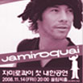

- Home
- Band
- Tour
- Albums
- Gallery
- Contact
-
Posted on 05.11.2008
Read Jay’s interview with Captive Animals’ Protection Society
Last year Jay accepted the offer to become Patron of the Captive Animals Protection Society. CAPS caught up with him to find why he agreed to become patron and what he really thinks...
32 Comments | Add comment | Email to a friend
-

Posted on 21.10.2008
Jamiroquai to play Korea 14th November 2008
Jamiroquai will be playing at The Olympic Hall in Seoul, Korea, on 14th November 2008. For more info please visit: http://www.allaccess.co.kr/
55 Comments | Add comment | Email to a friend
-
Posted on 15.10.2008
A message to everyone from Jay
Hi everyone Well, it feels like summer in the UK doesn't want to start but I'm glad to say that hasn't stopped us enjoying the sunshine at many superb festivals around Europe.
86 Comments | Add comment | Email to a friend
-

Posted on 5.10.2008
Jay beats Cowell on Top Gear!
Jay beat Simon Cowell yesterday (by 0.1 of a second with a lap time of 1 minute, 45.8 seconds) to top the leaderboard on the BBC's Top Gear. If you're in the UK you can watch the episode on the BBC iPlayer, Jay appears ...
78 Comments | Add comment | Email to a friend
- Jay Kay
- Derrick McKenzie
- Rob Harris
- Sola Akingbola
- Matt Johnson
- Paul Turner
Jay Kay
It’s fifteen years since Jamiroquai main man Jay Kay signed his unprecedented eight album deal with Sony’s S2 label. While much is made of the short-sightedness of British record companies, it’s only fair to credit Sony (now Sony/BMG) for the gamble. Back in 1992 Kay was a skinny white kid with a skateboard, a passion for vintage rare groove and a bizarre ‘Buffalo’ hat. Over twenty million albums, four world tours and 141 weeks on the UK singles chart later, it’s safe to say the gamble paid off.From poster boy of the early nineties acid jazz revolution to international music icon, a lot has changed for Kay in those fifteen years.Thanks to six albums of consistently on-point, danceable grooves and mercilessly unshakable melodies - not to mention an undisputed reputation as an electrifying live act - Kay’s as recognisable in France, Spain, Italy, South America, South Africa, Australia and Japan as he is to anyone who’s ever picked up a UK tabloid. While in America his status as one of the UK’s most respected exports is backed by an ever growing grass roots following, five MTV awards and a Grammy. Much to his amusement, of late Kay’s also become something of a style icon, as confirmed by his collection of Elle and GQ style awards.“I’ve still got so much to prove,” when talking of the time he spent writing, recording and honing sixth album, ‘Dynamite’. Written and recorded in Spain, Italy, Costa Rica, Scotland, New York, Los Angeles and his own purpose built Buckinghamshire studio, ‘Dynamite’ was both a consolidation of fifteen years of Jamiroquai’s trademarked sci-fi sound and a cocky, two fingers to anyone who thinks that Kay might be resting on his country pile.
Derrick McKenzie
Lynchpin band member and drummer supreme Derrick McKenzie joined the band in 1994 for the recording of Jamiroquai's sophomore album Return Of The Space Cowboy. Derrick was born on 27th March 1964, with drumming in his blood. His career was kick-started early with performances on his Mum's tables, chairs, telephone books and biscuit tins! After a succession of jobs to support his drumming, Derrick became a full time and sought after session drummer with bands such as Urban Species. When Jay was looking for a drummer in 1994 he knew straight away that Derrick was the man. Influenced by classic soul artists like Patrice Rushen, virtuoso musicians like Prince and his drumming hero Billy Cobham, Derrick fitted right in to the Jamiroquai family. In fact he was whacking the skins so hard and with such enthusiasm at his first Jamiroquai gig (in Paris, 1994) he had to have his aching arms sprayed with Raljex! His favourite Jamiroquai show so far has been Wembley Arena 1999 and visiting Buenos Aires with the band in 1997 was also one of the highpoints of his career. Read more, and see photos, at Derrick's MySpace. To celebrate Derrick's birthday on 27th March, he answered a few quick-fire questions....
Rob Harris
Rob Harris joined as guitarist of Jamiroquai in 2000. Born 27th August 1971 in Cambridgeshire, he started playing at the tender age of 7. He quickly mastered acoustic and electric guitar and was inspired to become a musician whilst listening to The Beatles. Rob has been playing professionally since he was 21 (the same year he married his wife Stephanie) and has toured with many artists. His main musical influences are The Crusaders, and George Benson amongst others, but the biggest inspiration for him was Jimi Hendrix. When Rob was brought in to audition for Jamiroquai, he sat up until the early hours every night beforehand learning all the old Jamiroquai tracks. Impressed by his talent and getting on with him really well from the outset, Jay asked Rob to join the Jamiroquai family permanently and they soon started work recording A Funk Odyssey. Read more at Rob's MySpace
Sola Akingbola
Sola joined Jamiroquai in 1995 as percussionist. Born in 1965, Sola only really started to take his percussion playing seriously some 10 years ago having spent his time before that DJ-ing around London's funkier clubs. Sola was born in Nigeria and came to the UK with his parents as a young child. He has now raised his own family here in London. Africa and African music is still a very strong influence in his life - the Nigerian language itself has an intrinsically musical and rhythmic feel. Sola aspires to musical excellence like his hero Miles Davis, but his tastes are wide, ranging from Earth Wind and Fire to classical composers like Bartok. Having played percussion with artists such as jazz guitarist Ronnie Jordan, Sola met Derrick and was soon asked by Jay to join Jamiroquai. His work on stage with the band is awesome to behold and his percussive licks and vibes can also be heard on both Travelling Without Moving and Synkronized. Read more at Sola's official website.
Matt Johnson
Matt was aged five when he started playing the piano at his family home. ‘My dad was a musician so there was always music playing in the house, but I remember being taught by a scary old piano teacher, who must have been over 90 years old’. His influences range from Herbie Hancock and Miles Davies through to Squarepusher. Before playing in Jamiroquai we was a writer and performer in bands "Sunray", with whom Kim Mazell recorded a cover of "Perhaps", and Nu Hope. He has also written and produced artists with artists such as Alexia, who had a minor hit with "Ring". His route into Jamiroquai was via an audition in 2001. He was recommended by Simon Katz, a previous guitarist, and Derrick gave him the call. The audition was a success and Matt is now a well established part of the Jamiroquai family. Read more at Matt's MySpace.
Paul Turner
Paul Turner, bass player and newest member of Jamiroquai joined the band in April 2005. Born in Sunderland, England, he's been a full time professional musician since 1987. After auditioning with the band earlier in the year, Jay offered Paul the gig. Before joining Jamiroquai Paul spent two years recording and touring the world with Annie Lennox. He's also played gigs with Omar, Mica Paris and urban jazz funk band "Down To The Bone", which has had great success in the States.
- Date
- City
- Country
- Venue
album
Contact Form
- 2008 Jamiroquai - Official Website
- Contact
- Privacy
- Credits: Digital management
- Cms and Design
- Hosting